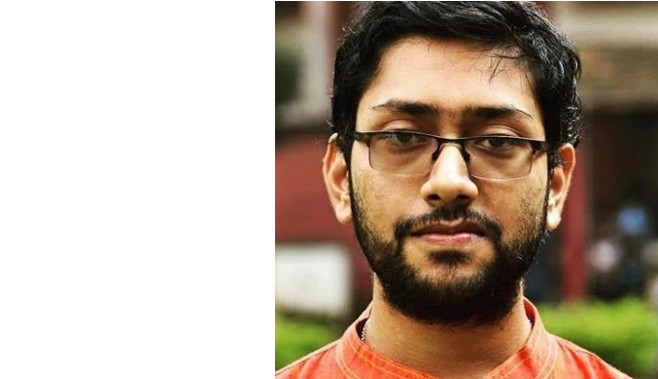

Home
Hi, I'm Rohit and I am currently a postdoctoral researcher at the International Centre for Theoretical Sciences (ICTS-TIFR), Bengaluru, India. I completed my PhD as a Prime Minister's Research Fellow (PMRF) under the supervision of Dr. Bodhayan Roy, from the Department of Mathematics, Indian Institute of Technology Kharagpur. My research interest lie in the area of quantum computing, quantum circuits, quantum information, linear algebra and quantum walks. My thesis is titled Scalable quantum circuit representation of unitary matrices. Here is my CV.
Research
In my PhD tenure, we developed scalable quantum circuits for unitary matrices that describe the evolution of many-body quantum systems. Specifically, we proposed a quantum neural network-based framework to approximate any target unitary for n-qubit systems, and we established a circuit representation for the exponential of scaled Pauli strings which we used to propose scalable quantum circuit simulations of various Hamiltonians on near-term quantum devices. Furthermore, we analyzed several fundamental properties of diverse classes of discrete-time quantum walk models on various graphs using parametric coins which were introduced by us. For discrete-time three state quantum walks on Cayley graphs, we additionally proposed a scalable quantum circuit model using elementary qutrit gates. We explored the circuit complexity of the proposed quantum circuit models, and incorporated various noise models in our circuits to investigate the performance of the proposed circuit simulations on near-term quantum computers. Here, scalable quantum circuit means that it is possible to construct a quantum circuit for (n+1)-qubit system from a quantum circuit on n-qubit system using additional elementary quantum gates.
Firstly, we developed a parametric representation of unitary matrices of dimension d with the introduction of a new unitary Hermitian basis for the algebra of d-sized complex matrices. Then, we adopted a Lie group theoretic approach to create an optimization algorithm for approximating any target unitary matrix using this parametric representation. Consequently, we employed these results to propose a new unitary Hermitian basis for the algebra of 2^n-sized complex matrices, called the Standard Recursive Block Basis which serves as an alternative to the Pauli-string basis. We used this basis to develop an optimization-based approximation algorithm for a scalable quantum neural network representation of a target unitary for n-qubit systems. Additionally, we developed a scalable quantum circuit representation of the exponential of scaled Pauli strings, using which, we have executed circuit simulations of several one-dimensional Hamiltonians on near-term quantum computers, utilizing the first-order Suzuki-Trotter formula. These Hamiltonians include 2-sparse Hamiltonians, Ising Hamiltonians, and time-independent and time-dependent Random Field Heisenberg Hamiltonians, and Transverse Magnetic Random Field Quantum Ising Hamiltonians.
Further, we introduced discrete-time quantum walk models on cycle graphs, one-dimensional, two-dimensional lattices and Cayley graphs corresponding to Dihedral groups, using parametric coin operators known as generalized Grover coins. Such parameterization was obtained via characterization of orthogonal matrices that are linear sum of permutations i.e. generalization from a combinatorial perspective. We analytically derived the periodicity of these walks and demonstrated through numerical simulations that the walker tends to localize at the initial position for a wide range of parameters of the coin operator, depending on the choice of initial coin states. We then developed qutrit quantum circuit models for simulating three-state discrete-time quantum walk on Cayley graphs defined by Dihedral groups and the additive group of integers modulo a positive integer. These circuit models are scalable and are constructed using elementary qutrit quantum gates, such as single qutrit rotation gates, the qutrit-X gate, and two-qutrit controlled gates. We also subjected the proposed circuits for Hamiltonian simulations and quantum walks to diverse noise models of varying strengths in order to analyze the circuit performance in noisy intermediate-scale quantum (NISQ) settings.
Academics
- PhD in Mathematics, Indian Institute of Technology Kharagpur (2024)
- Master of Science in Mathematics, Indian Institute of Technology Kharagpur (2019)
- Bachelor of Science (Hons.) in Mathematics, Presidency University Kolkata (2017)
Publications
- Chakraborty, Sabyasachi, Sarma Sarkar, Rohit, and Majumder, Sonjoy, Scalable quantumcircuit simulation of a chaotic Ising chain in light induced transverse field, 16th International Conference on Fiber Optics and Photonics, Accepted (Awarded Best Paper), (2024).
- Sarma Sarkar, Rohit, and Adhikari, Bibhas, Quantum circuit model for discrete-time three-state quantum walks on Cayley graphs, Physical Review A, vol. 110 (1), pp. 012617, doi: 10.1103/PhysRevA.110.012617, (2024). Link
- Sarma Sarkar, Rohit, and Adhikari, Bibhas, Discrete-time quantum walks on Cayley graphs of Dihedral groups using generalized Grover coins, Quantum Information Processing, vol. 23 (5), pp. 172, https://doi.org/10.1007/s11128-024-04385-y, (2024). Link
- Sarma Sarkar, Rohit, and Adhikari, Bibhas, Scalable Quantum Circuits for N-Qubit Unitary Matrices, 2023 IEEE International Conference on Quantum Computing and Engineering (QCE), Bellevue, WA, USA, 2023, doi: 10.1109/QCE57702.2023.00122, (2023). Link
- Mandal, Amrita, Sarma Sarkar, Rohit, and Adhikari, Bibhas, Localization of two dimensional quantum walks defined by generalized Grover coins, Journal of Physics A: Mathematical and Theoretical, vol. 56 (2), pp. 025303, doi: 10.1088/1751-8121/acb304, (2023). Link
- Mandal, Amrita, Sarma Sarkar, Rohit, Chakraborty, Shantanav, and Adhikari, Bibhas, Limit theorems and localization of three-state quantum walks on a line defined by generalized Grover coins, Physical Review A, vol. 106 (4), pp. 042405, doi: 10.1103/PhysRevA.106.042405, (2022). Link
- Sarma Sarkar, Rohit, Mandal, Amrita, and Adhikari, Bibhas, Periodicity of lively quantum walks on cycles with generalized Grover coin, Linear Algebra and its Applications, vol. 604, pp. 399-424, https://doi.org/10.1016/j.laa.2020.07.006, (2020). Link
For further details on preprints and publications, check out my ResearchGate profile and my Google Scholar profile .
Awards and Accolades
- Secured the highest marks in Mathematics in W.B.B.S.E secondary examination (2012)
- Secured the All India Rank of 145 at IIT JAM entrance for MSc. Entrance. (2017)
- Received CSIR-UGC Junior Research Fellowship in Mathematics with an All India Rank of 47. (2018)
- Received GATE Fellowship in mathematics given by MHRD, Government of India (2019)
- Secured top 3 position in MSc. Mathematics IIT KGP. (2019)
- Received the Prabodh Chandra Sanyal Award for the best Masters Thesis in Mathematics,IIT Kharagpur. (2019) Thesis titled: Chip Firing Problems with Kronecker Products and Quantum Walks
- Received the Prime Minister's Research Fellowship (PMRF) (2020)
Teaching Experience
Indian Institute of Technology Kharagpur:
- Advanced Calculus/Math-I Tutorial Instructor for Fall 2020, Subject Code: MA11003
- Linear Algebra, Numerical and Complex Analysis Tutorial Instructor for Spring 2021, Subject Code: MA11004
- Probability and Statistics, TA, Fall 2021, Subject Code: MA20205
- Advanced Calculus/Math-I Tutorial Instructor for Fall 2021, Subject Code: MA11003
- Information and Coding Theory, TA, Spring 2022, Subject Code: MA41024/MA60020
- Integral Equations and Variational Methods, TA, Spring 2022, Subject Code: MA51004
- Linear Algebra, Numerical and Complex Analysis Tutorial Instructor for Spring 2022, Subject Code: MA11004
Other Institutes/Universities:
- Advanced Linear Algebra course instructor at Kharagpur College, Kharagpur City Rd, Kharagpur, West Bengal 721305, India, 2022, 2023, 2024.
- Advanced Linear Algebra course instructor at Hijli College, Post Hijli Co-operative, Paschim Medinipur, Kharagpur, West Bengal 721306, India, 2022, 2023, 2024.
- Mathematics instructor for competitive examinations at Presidency University, Kolkata, 86/1 College Street, Kolkata-700003, West Bengal, India, 2023–2024.
Contact Details
Find me at:
ORCID Id: 0000-0003-0747-2572Email:
- rohit15sarkar[AT]yahoo[DOT]com
- rohit[DOT]sarkar[AT]icts[DOT]res[DOT]in
- rohitsarmasarkar95[AT]iitkgp[DOT]ac[DOT]in